Unknown Knowns in AI
Donald Rumsfeld famously laid out the universe of knowledge into 3 categories — the known knowns: things we know, the known unknowns: things we know we don’t know, and the unknown unknowns: things we don’t know we don’t know.
But there is a fourth category: the unknown knowns: knowledge we have, but we’re pretending to not know because acknowledging it would be very inconvenient.
I’ve been heads down on my company these past few months and getting to observe the “unknown knowns” of the AI world closely. So when I came up for air recently, I just had to dust the cobwebs off this substack and get this out of my system. Hopefully this is worth your time (the embedded links are gold, though; spend more time there than on my post!).
Judge this book by its table of contents:
- What’s hard any more?
- Product, schmproduct
- Hallucination is real
- AI slop is unreal
- Wood-and-leather paneling
- Do you even prompt, bro?
- Unbearable pithiness of ‘LLMs are a commodity’
- Creative destruction of the creative destroyers
What’s hard any more?
LLMs have made many hard problems easy to solve. That is not all good news. Businesses can’t capture value by solving easy problems. If the hard problem you were solving suddenly has easy solutions, you should be nervous. Conversely, don’t take on problems because they have now become easy to solve. The multitude of copywriting products that started in the last two years are already getting rudely awakened to this reality.
Yes, we like to dismiss products that look like “LLM wrappers” but that is a gross mis-generalization. Smart LLM wrappers are able to find another hard problem adjacent to the LLM functionality to create something compelling. Cursor is a great example of this.
Product, schmproduct
The AI product demos have been so magical* that they suck up all the attention from the rest of the business — see NotebookLM. *In fact, so magical that when I describe functionality to potential (admittedly, normie) customers, they think I’m lying.
There’s been enough ink spilt on how product isn’t the most important. What’s that aphorism — third time founders obsess not over product (like first timers) or even over distribution (like second timers) but over retention. IMO, the ultimate source of all good business outcomes is differentiation.
If you can claim a useful differentiation, it’s easier to sell, easier to protect margins, easier to retain customers, etc. etc. There’s the added benefit of being able to say “competition is for losers” at dinner parties.
It is possible to build differentiation outside the product — in branding (Cash App), or a distribution channel (Microsoft Teams anyone?), or finding a sticky niche (heard of the Island browser?) or even a unique capitalization strategy. In a world where AI tools supercharge what small, inexperienced teams are able to do, differentiation is even more important.
Hallucination is real
Anyone who’s been using LLMs for serious work has realized how pervasive hallucination are. Even in code generation, arguably the most impactful application of LLMs today, I’ve had so many instances when the model would dream up entire APIs and functionality.
Hallucination is inescapable — it is ingrained in what makes LLMs even possible. This is not a product design problem in the way non-determinism behavior is.
There doesn’t seem to be an agreed upon way to solve hallucinations, but some tactics are emerging. Evals can’t prevent it, although evals can help somewhat gauge the scope; RAG helps to a certain degree depending on the use case, by grounding the generation in the right context. LLMs-as-a-judge is another way to reduce hallucination.
I am amazed how little airtime has been given to hallucinations, but the bubbling brouhaha about Whisper inventing treatments in medical transcriptions may be the first real-world wake-up call.
AI Slop is unreal
Yes, it’s easy to have AI reach out to 10x more leads than your lone sales rep could ever do. Or submit thousands of job applications. Or cold email investors. Not only are email inboxes flooded, so are sites like Medium and even phones!
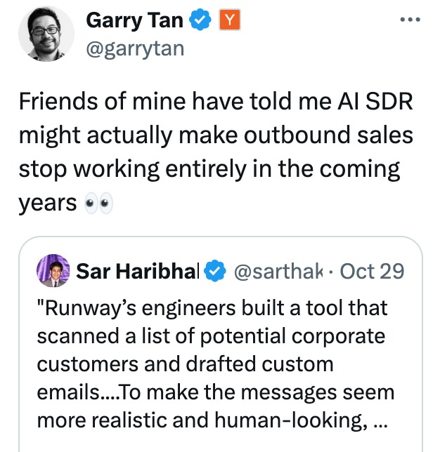
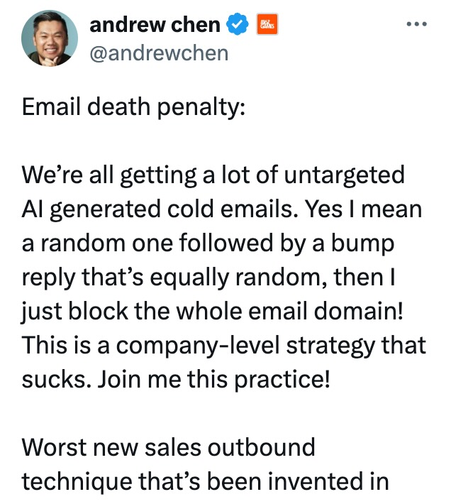
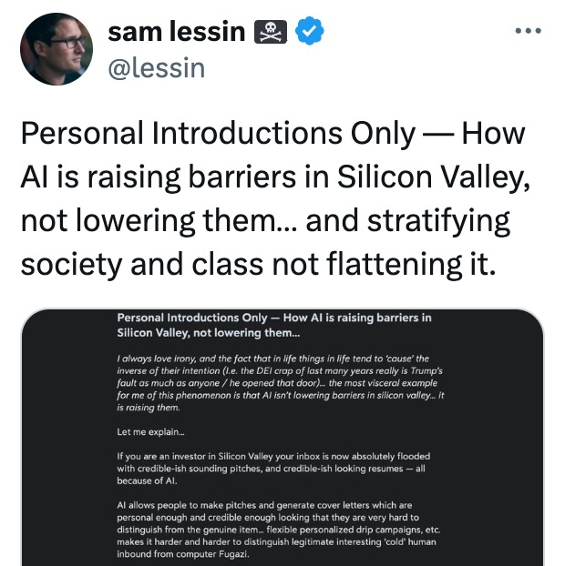
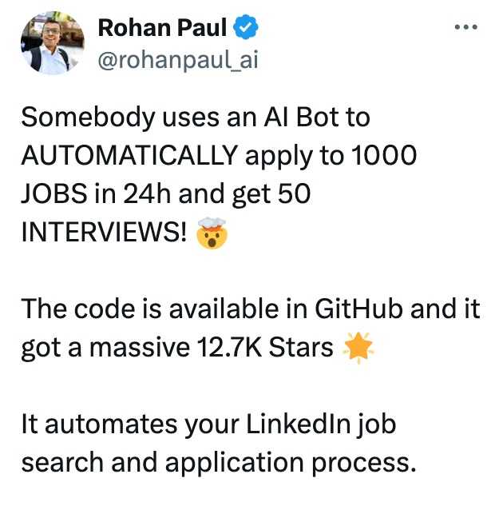
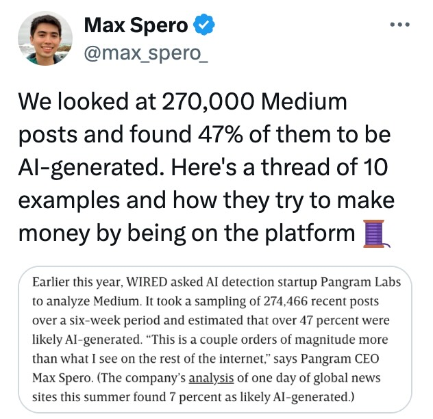
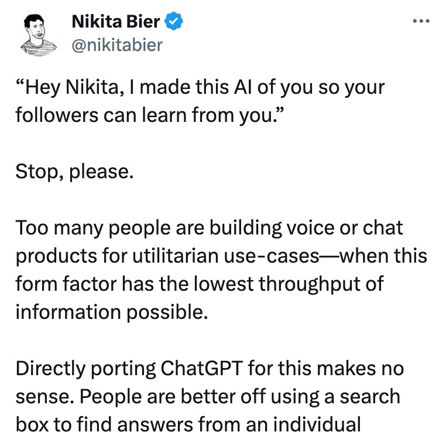
There was a time when email had an existential crisis from spam — email was becoming unusable until someone figured out how to use Bayes Classifiers to put an end to it. Now spam detection is so good that much of it doesn’t even reach your email provider, and most users don’t even know they have a spam folder. AI generated content aimed at scaling “marketing” is going to go the same way — marked as spam or handled by your AI email assistant before you even get to see it. Sure there is a tiny window of “AI slop arbitrage” right now but it will be short short. Plan accordingly.
I’ll bet $100 that “slop” is going to be word of the year or a new definition in the Oxford dictionary in 2025.
Wood-and-leather paneling
Remember when iPhone UIs looked like they were made of wood and leather? We’re in that skeuomorphic phase of AI applications.
Companies are creating “AI employees” with taglines like “Ava the BDR prospects for you” and “Meet Ema. She learns, adapts, evolves…” and “Meet Jerry, who sells, schedules and communicates while sounding like a human”. There is very little chance ‘AI employees’ will be the same bundle of abilities or carry out similar tasks as a human counterpart in the same way content online has not turned out to be shaped like magazines or TV channels or cassette tapes.
The same goes for chat — we’re now stuck with the original sin of the chat interface. The irony? ChatGPT wasn’t even created as a first-class consumer product — it was meant to be a simpler way to preview GPT’s capabilities and collect feedback.
Interfaces exist in gravity wells: they need to sink to the point of lowest potential energy and be as effortless to use as possible. Chat is great to communicate with humans, especially in transactional situations. Typing letter after letter to an automaton is low utility. While character.ai has a chat usecase, extracting information from pdfs or generating code does not.
An early Gemini demo showed interfaces being generated on-the-fly, Apple Intelligence is not emphasizing chat as much, and ChatGPT’s canvas mode opens up more possibilities. LLM interfaces are under-explored.
Do you even prompt, bro?
Prompts can be long and complex and provide tremendous leverage to the performance of an LLM. Look at Meta AI’s system prompt. Or Perplexity’s. I use the Eigenbot prompt that makes Chat GPT work far better for me. Most end users are not writing good enough prompts, and I bet the average usage is very inefficient. If you ask many people outside the AI bubble they’ll have a “meh” reaction to their $20 spend on ChatGPT or Claude.
Another aspect to prompting is context — additional content provided along with the prompt to aid the LLM. GPT-4 allows 128,000 tokens in their context window: that is 300 pages! Yes, three hundred pages. How long were your last 10 prompts? Gemini 1.5 Pro allows a 1M token large context window. RAG (Retrieval Augmented Generation) infrastructure is a cottage industry spawned around LLMs to find augment the generation with the best context retrieved from a large corpus of information available to the user. Using RAG effectively is also another way to improve outcomes from LLMs.
Ultimately, no one fully understands why LLMs behave the way they do, so the art of prompting is getting discovered through trial-and-error than invented from first principles. Before SEO farms ruined search, there would be many guides on how to use Google search effectively, and now there are guides on how to prompt well.
What is most interesting is that single shot prompt is not as effective as multi-shot (giving examples in your prompt) or in going back-and-forth with the LLM to iterate and improve on its answer. Taking this interaction model to a user interface that isn’t free-form chat (or doesn’t depend on the user knowing how to do the back-and-forth) will be an interesting product design challenge.
Aside: the next time someone calls an app an “LLM wrapper”, you can explain why the wrappers can be valuable!
Unbearable pithiness of ‘LLMs are a commodity’
We in Silicon Valley are fond of saying things like “foundational models will get commoditized” or “AI x crypto” or “at the margins” or “orthogonal” (yeah those last two are not relevant here but entirely real). Just look at the number of Google results for “where value will accrue in AI”.
It is extremely hard to predict what layer of the stack will get commoditized. For a while during the cloud wars in the mid 2010s it looked like cloud services would become a commodity. But they are not; they drive large margins for AWS, GCP, Azure and so many specialized providers too.
One simple, compelling argument for why LLMs will not be commoditized is that there is a lot of room for innovation and differentiation across the stack:
-
Data: so far, most of the training data has been publicly available data. While there is a race to sign deals for proprietary data, the most interesting recent breakthrough is the use of synthetic data: it’s working. Every lab will figure out how to generate the better data than the next, and keep it a closely guarded secret.
-
Model architecture: This whole area was seeded by the famous Transformers paper from Google. What are the odds that the next breakthrough will be published publicly? You can bet your last $ that every large company has a research team working on this.
-
The CUDA layer: Netflix famously said that they can use AWS more efficiently than Amazon. A few people at the AI labs have riffed on that saying they can use CUDA better than NVidia. Driving more efficiency in training and/or inference gives you more degrees of freedom with cost, quality, latency, etc. for your foundational models.
-
Data center design: The largest GPU cluster (think of a cluster as a single brain) to train a large model was ~32,000 H100s. It was hard to go beyond because of power, energy, networking limitations. Then Elon and xAI came along and redesigned their data center from scratch, and managed to build the largest cluster in the world with a 100,000 GPUs — ~3x larger! More labs will start investing in their data centers. They also had help from Tesla.
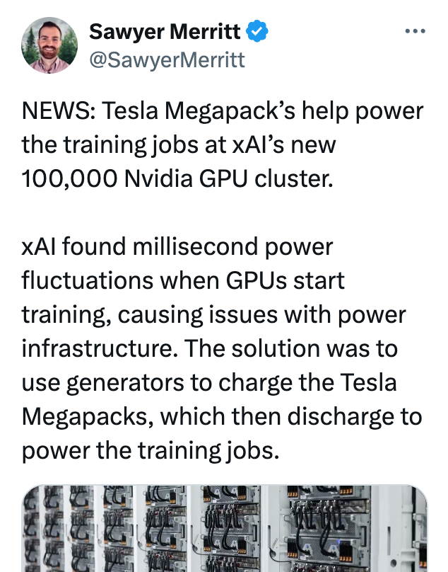
-
Related to data centers is the network — how GPUs connect together, how they share memory. It demands fundamental computer architecture changes and it will happen. These will be trade secrets closely guarded by the LLM companies.
-
Beyond the data center is energy management: how do you power it, what’s the cost of power (which has bearings on how you can price your LLM API or how long you can run your training to improve quality), how effectively you can manage the heat generated (which influences both costs and scaling and quality). GPUs sometimes melt!
Where value will accrue is far from known, or even predictable.
Creative destruction of the creative destroyers
Hofstadter’s law as applied to AI might say “the impact of AI will be greater than expected even if you account for Hofstadter’s AI law”. In my own work and that of many other people it is blindingly obvious that AI is reshaping roles. Designers will build and support will fix and marketers will design. PMs are suddenly going to have a lot of free time.
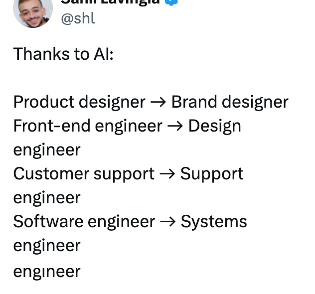
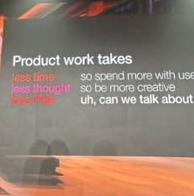
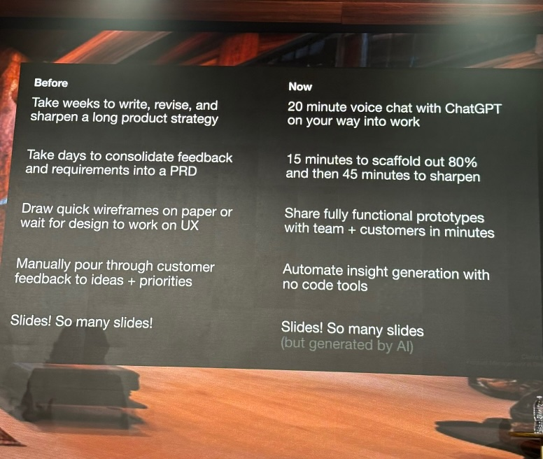
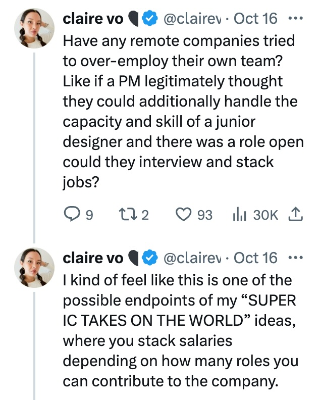
Companies are not waking up to this fact soon enough. They need to change their organization very quickly, and start rolling their own tools that lever up their people. If you’re a new company, you need to throw out all existing playbooks on how you hire, for what skills and the composition of your team. This obviously will have large ramifications on your capital allocation and raising plans.
So new companies will be built different and mid-sized companies will be forced to overhaul (What I’d give to be a fly on the wall in some of their staffing strategy conversations!) Pretty sure the large companies are going to chug along unchanged for a long time. One implication here is that the TinyCo and BigCo cultures will diverge even more and may make it hard for talent to go from one to other (something that actually happened a lot during the ZIRP era).
Okay, this is already long enough of an essay and I’ll abruptly stop right here. If you’re in similar trenches and want to chat about any of this, shoot me a note.